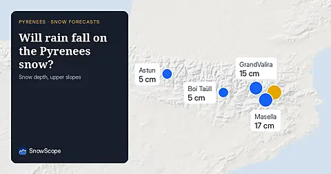
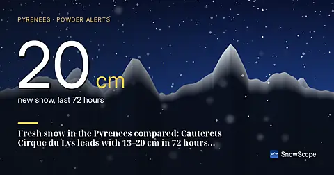
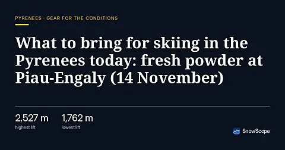
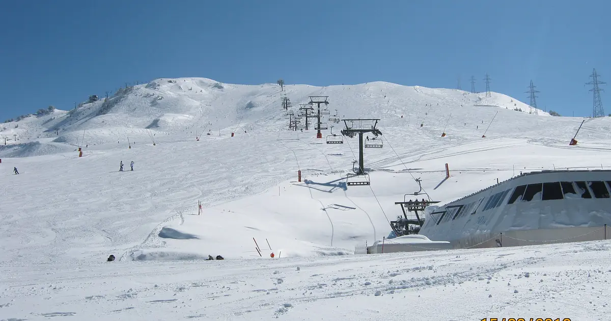
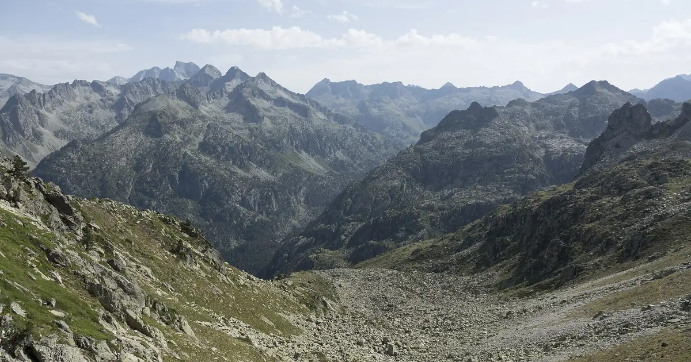
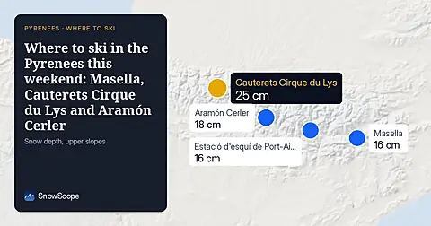
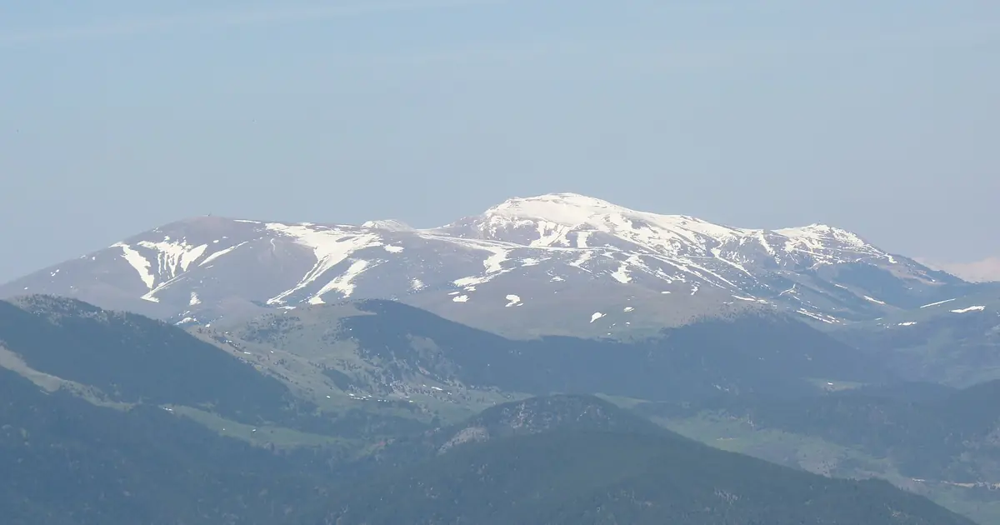

Snow reports · Pyrenees
Pyrenees: Over the next days the 0 °C level in the Pyrenees should move between 1,900 m and 3,670 m, according to our forecast. At the warmest time …
Snow by country today
The whitest countries today: France (13 %), Andorra (7 %) and Spain (0 %).
Most new snow in the week ahead: France (125 cm), Andorra (9 cm) and Spain (5 cm).
Featured

Fewer snow days at all 120 points we studied in the Pyrenees since 1980-81, most below 1,500 m: our 46-winter record and the research behind it.

Grandvalira is often sold as cheap December skiing, yet natural snow at the base averages just 9 cm in past winters.

Rain forecast as freezing level climbs to 4080 m; snow measured on 15 November is thin (under 20 cm) at all major Pyrenees resorts.

Piau-Engaly leads the forecast with 37 cm of new snow by 13 November; 24 cm is expected on 12 November.

Freezing level reaches 3590 m across the Pyrenees on 9 November, bringing rain-on-snow to thin upper slopes. Pack waterproof layers and gaiters.

Freezing level reaches 3620 m on Sunday 8 November, above Aramón Cerler's 2618 m top, bringing rain-on-snow risk (forecast from 6 November data).

Freezing level reaches 3400m–3600m over the next three days, bringing rain to the snowpack from 09–11 November. Forecast from 08 November.
Rain or snow in the Pyrenees? The snow line climbs to 3,400 m at Les Angles (18 November)

Over the next days the 0 °C level in the Pyrenees should move between 1,900 m and 3,670 m, according to our forecast. At the warmest time of day the snow line, about 300 m lower, climbs to 3,400 m at Les Angles on Thursday 19 November. Standing at the snow line you can often see it: rain in the car park, snow from the first chairlift up.
Snow line, resort by resort
Boí Taüll (base 2,039 m, top 2,747 m): on 19 November the snow line climbs to about 3,000 m, higher than the top, so any rain or wet snow would hit the whole mountain.
At Ordino-Arcalis (base 1,943 m, top 2,626 m) the snow line reaches about 2,900 m on 19 November, above the top: if it rains, it rains everywhere.

The Pyrenees will see 91 cm of new snow in the next 14 days, with half falling in week 1. Upper slopes above 2500 m get the most. Forecast from 2026-11-18.

Snow-covered area jumped from 560 to 1,710 km² between November 17 and 19. Piau-Engaly holds the deepest snow at 15 cm on upper slopes as of November 19.

Over the next days the 0 °C level in the Pyrenees should move between 1,900 m and 3,670 m, according to our forecast. At the warmest time of day the …

The Pyrenees will see up to 63 cm of new snow in the next 14 days, with 70% falling in week one. Best snow expected above 2000 m.


Cauterets offers 25 km of runs for 46 EUR, but our snow history shows that the best chance for cover is the last week of December.

Compare Grandvalira and Spanish resorts in December 2026 for snow depths, lift heights, and prices starting from 49.00 EUR.

For a low-cost December family ski week at Astún-Candanchú, aim for late December when top slopes hold good snow in 67 % of past winters.

Planning a December trip to Baqueira Beret? See our snow history, ticket prices starting at 70,00 € for a 1-day pass, and how it compares to Astún-Candanchú.

The white area on the map went from 910 km² (12 November) to 1,100 km² today, and the forecast says 640 km² on 17 November. Mixed rain and snow: snow …

Read the snow in the Pyrenees today and you get fresh powder, thin early-season snow and warm air that can leave a crust. So here is the kit list, …


Today's maps look two weeks ahead in the Pyrenees, 13 November to 26 November. They come from the two global models that reach two weeks, ECMWF and …

Piau-Engaly on 12 November: freezing level at 3060 m brings rain risk despite 16 cm of fresh snow in 72 hours.

Pyrenees snow report, 12 November. Looking ahead to 15 November, the forecast brings 33 cm at Cauterets Cirque du Lys, 29 cm at Piau-Engaly and 25 cm …

Is there more snow than a year ago? We compared today with 11 November last winter at 4 resorts in the Pyrenees: 0 of them have more snow now, …

From our snow model and forecast, today in the Pyrenees brings thin early-season snow and warm air that can leave a crust. Below, resort by resort: …

How long the Pyrenees stayed white each winter since 2000-01, seen by satellite, and snow depth at 10 long-running stations. Three thin winters in a row ended in 2025-26; this autumn has started normally.

The 0 °C level in the Pyrenees, next days: 2,420 m to 3,710 m. The snow line, about 300 m lower, peaks at 3,400 m at Masella on Tuesday 10 November. …

Andorra has no big airport: how to reach Grandvalira from Barcelona or Toulouse, the Envalira tunnel, the CG2 road and the free and paid car parks.

Gourette and Cauterets side by side: heights, usual snow by month, the best weeks and how to get there, from 46 past winters.

Baqueira-Beret sits in the Val d'Aran, on the Atlantic side of the Pyrenees. What that means for its snow, tested with 46 past winters against La Molina, and when to go.

How to spend one good day at Luz-Ardiden, a small ski area above Luz-Saint-Sauveur in the Hautes-Pyrénées: the road, the two sectors, the snow of 46 past winters and which weeks to choose.

0 cm at 2,052 m on 7 November, as in many past winters. Last winter peaked at 100.6 cm. Interactive chart and data.


Rasos de Peguera got 15 cm of new snow in the last 72 hours. It now has about 20 cm on its upper slopes, according to our snow model.

We combined today's snow depth, the new snow of the last 72 hours and the forecast to pick Rasos de Peguera, Aramón Cerler and Masella. Of these …

We compared today's snow at 4 resorts in the Pyrenees with the same date in each of the past 46 winters. 1 of them are clearly above normal.

We combined today's snow depth, the new snow of the last 72 hours and the forecast to pick Masella, Cauterets Cirque du Lys and Aramón Cerler. Of …

Rasos de Peguera got 17 cm of new snow in the last 72 hours, 17 cm of it in the last 24 hours. It now has about 13 cm on its upper slopes, according …

We combined today's snow depth, the new snow of the last 72 hours and the forecast to pick Masella, Estació d'esquí de Port-Ainé and Cauterets Cirque …